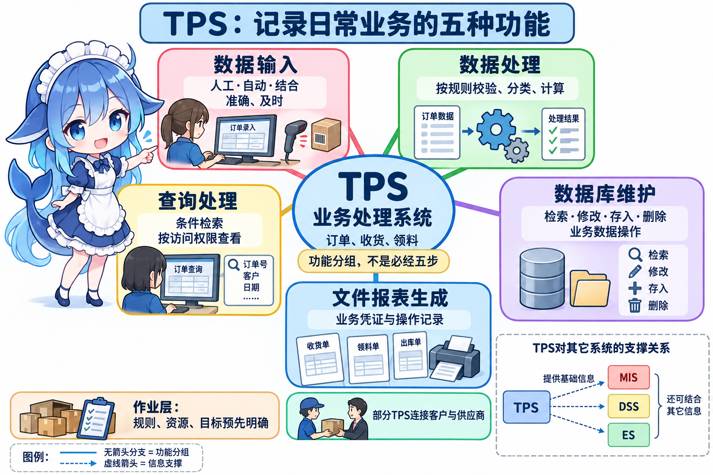
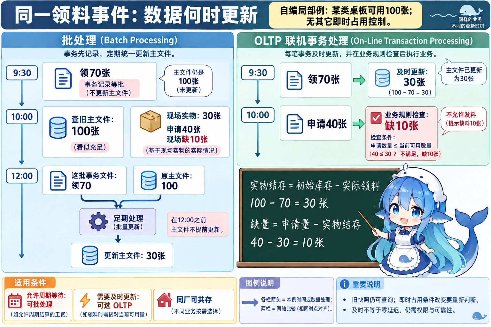
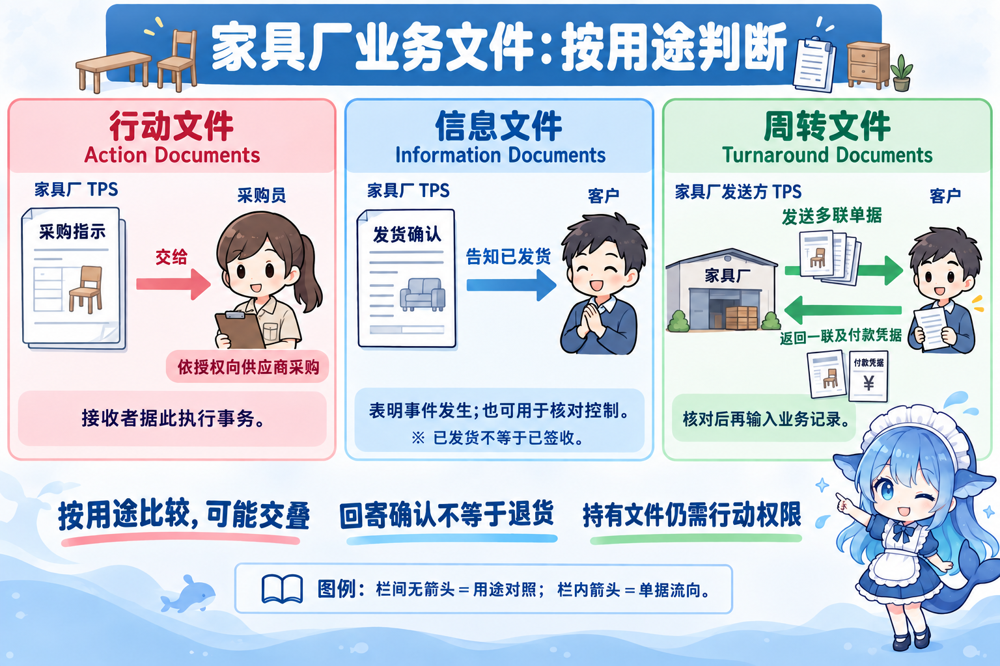

青木家具厂接下周五交付 100 张桌子的订单，销售要登记客户要求，仓管员要记录领料，财务要核对发货与账款。先让每一笔业务有据可查，才能继续讨论缺料率、成本和排产方案。这一节从现场记录出发，看看系统怎样把经营事件变成可以使用的业务信息。
先把一笔业务办清楚 3.2.1 概念
TPS，Transaction Processing System，业务处理系统，也称事务处理系统，承担企业日常经营活动的记录与处理。教材还沿用早期名称 EDP，Electronic Data Processing System，电子数据处理系统。一般英文中 EDP 也表示 Electronic Data Processing 这项活动；旧笔记的 EDPS 是名称写法差异，不据此增加一种系统或处理方式。TPS 是较早投入应用、今天仍广泛使用的信息系统。
这里的“事务”可以是一笔订货、一次收货或一次领料。经办人把事件记入传票等凭证，再转记账簿，核对、分类统计并形成报表。它描述经营活动，阅读本节时先保留这一语境。厂里按已明确的信用、库存和交付规则处理订单：作业任务、资源和目标预先确定，问题的结构化程度高；人员仍需确认事实和处理异常。
跟着这张订单走，可以辨认教材列出的四项业务功能：订货受理记录要求并核查信用、库存等条件；发货准备生成指示、安排备货；发货记录实际数量与交接；付款通知结合事后的单据核对，记录账项并通知结算。图中按本册业务语义重画流程，不沿用教材文字中有遗漏和重复的事务编号。


教材描述的传统事务子系统往往彼此分离，使用专用软硬件和文件。现代集成平台也可以承担这些 TPS 功能，共享数据库并不改变库存登记的业务定位。车间、办公室都有日常事务；其中一些 TPS 位于企业边界，连接客户或供应商。系统能够减轻原始数据处理负担、提高效率，部分手工操作可被替代，具体自动化程度仍由业务规则决定。
五种功能怎样配合 3.2.2 功能
教材归纳五项功能：数据输入、数据处理、数据库维护、文件/报表生成、查询处理。它们是相联系的职责。领料记录进入系统，处理规则核对数量，数据库保存变化，文件输出凭证，人员可以查询记录。单独查一笔旧订单时，可以只检索并返回数据；每笔事务无需按固定顺序走完五格。




先确定输入了什么
一车间领走桌板，仓管员键入数量是人工输入；设备自动采集数据是自动输入；扫码后由人确认物料和数量是二者结合。输入容易成为处理的瓶颈，需要考虑准确、迅速、方式和进度。读到了送货单上的数字，还要核对它是否对应真实到货；自动采集不能保证原始数据必然正确。
教材列出的装置和方式也要按作用辨认：POS，Point of Sale，销售点终端服务销售现场；ATM，Automated Teller Machine，自动柜员机接收银行卡及用户输入、办理银行业务；扫描仪取得图像，语音识别和触摸输入帮助录入。OCR，Optical Character Recognition，光学字符识别从图像中识别文字。教材将 OCR 写成“阅读条码信息”，本册按公开一手资料区分：条码解码读取编码信息，OCR 识别字符；同一设备可以兼具两种能力。装置是否联网、是否扫码，都不能单独决定采用哪种数据处理方式。
记录下来，与立即更新主状态
批处理，Batch Processing，先积累事务再定期集中处理。传统方式包括收集成批数据、转储输入介质、按既有主文件次序分类后处理；RJE，Remote Job Entry，远程作业录入可以把一批作业从远端提交给主机。远程输入改变输入位置，不自动改成逐笔及时更新。
批处理时，事务文件记录这一批新发生的事件，原主文件提供此前的业务状态，两者一起输入处理，再形成更新的主文件及输出。教材的银行图用于说明这一机制，不能推成当今所有银行只有日终处理。允许周期结算的工资适合考虑批处理，它在这些条件下有经济性；两批之间主状态可能尚未纳入最新事件。查询旧快照仍然可行，查询速度快也不能使旧数据包含刚发生的业务。
OLTP，Online Transaction Processing，联机事务处理，通过联机终端及时处理发生的事务，更新文件或数据库并返回结果。本教材写作 OnLine Transaction Processing。它是处理方式，TPS 是系统类别：同一企业可以让工资周期核算与领料及时更新共存。这里的“立即、实时”按业务及时响应理解，不承诺零延迟或所有请求有同一严格截止期。


把两个时点放到同一张库存表
下面是本册自编局部例，只观察一类桌板，初始可用 100 张，没有其他即时占用控制。9:30 一车间实际领走 70 张，10:00 二车间申请 40 张。若主文件中午 12:00 才批量更新，10:00 查旧主文件仍是 100 张；现场已经只剩 100−70＝30 张，申请量与实物相差 40−30＝10 张。这个缺口由现场事实计算，不能说旧主文件此时已算出缺料。
改成 OLTP 后，9:30 的领料及时使可用量变为 30 张；10:00 再按“申请量不超过当前可用量”的业务规则核对，40≤30 不满足，便可提示缺 10 张。提示和限制依赖这条已实现的规则，OLTP 名称本身不会替系统建立规则。若批量更新前另加即时占用控制，前提已改变，也要重新判断。这组数字只解释更新时点，不替代整厂的物料和产能计划。


及时更新也会带来通信、运行和保障成本。直接访问业务数据需授权；业务连续性还要考虑容错。教材给出双 CPU，Central Processing Unit，中央处理器、后备机、冗余数据等办法。配置这些设备和数据仍需核查实际故障处理能力，不能由“有备份”推出零中断。
维护的对象，是业务数据
仓库登记收货、修正经核实的数量、按规则删除失效记录、检索一张凭证，属于本节的数据库维护：检索、修改、存入、删除业务数据，使已存信息反映经营状态。检索本身读取数据，其他访问按业务变化更新。3.1 的排错性、适应性等维护则关注程序和系统能力的修改，两者都可能发生在运行期间，要按对象和目的辨认。
这些业务记录可给 MIS 管理信息系统、DSS 决策支持系统、ES 专家系统提供基础信息；完整英文与类别见全章索引。其他系统还可以使用其他来源的信息。TPS 生成日志、分类统计和操作报表，能帮助核对业务；看到“报表”二字，不足以判为 MIS。进一步分析经营偏差、比较方案或结合专家知识，留到相应系统讨论。
同一张单据，按用途辨认
行动文件，Action Documents，让接收者据此执行具体事务。例如家具厂把采购指示交给采购员，由其依授权向供应商采购。信息文件，Information Documents说明某项事件已经发生，也可用于核对控制。客户收到明确写着“已发货”的确认单，知道货已发出；它没有证明客户已签收。文件名称中出现“订单”或“发货”，仍要读实际用途与状态。
周转文件，Turnaround Documents还需要看完整路径：家具厂发送多联单据给客户，客户返回一联及付款凭据给同一原发送者，家具厂核对后再次输入业务记录。外发而不返回、只转交第三方，都缺少这个条件。返回文件可以是正常业务回执，不直接表示退货；持有凭证也不能取得超出角色的操作权限。




查询还要问：谁能看，看到哪一时点
查询处理按条件检索并回答请求，例如查某客户、订单号或日期内的出库记录。批次查询和联机实时查询是查询组织方式；屏幕能马上返回，仍需核对所查数据何时更新。不同用户具有不同的访问权限，销售员可查交付状态，也可能无权读取财务明细。查询是读取操作，同样需要权限控制。
基础位置怎样影响建设 3.2.3 特点
TPS 为其他系统产生业务信息，常是企业全面信息化的起点。基础位置解释的是作业层与数据来源。库存或订单服务故障，可能干扰相关日常操作；处于企业边界时，还可能影响客户体验、组织形象和竞争力。影响范围要按实际业务辨认，不能把任何小故障都写成全厂停摆。
事务问题高度结构化，可以采用结构化生命周期法开发。同行业很多业务相似，也支持商品化：企业可购买现成系统，再按需要二次开发。家具厂选型时仍要核对领料规则、接口和业务差异，评估适配工作。可以买与可以定制是两种实施可能，结构化特征也没有规定只能采用一种方法。


回到周五交付
这笔订单可以有一个可靠的业务底稿：谁订货、何时领料、发了多少、哪些凭证已核对。判断 TPS，先看是否处理日常事务；判断批处理或 OLTP，再看事件何时处理和状态何时更新；判断文件类别，读接收者的用途与回传路径。需要汇总经营信息时，下一节将转向 MIS；当前这些准确、及时、受控的基础记录，继续为后续工作提供数据。